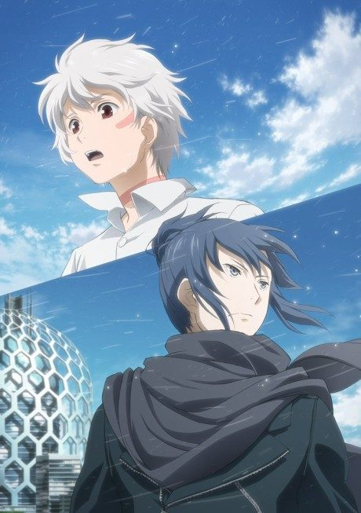
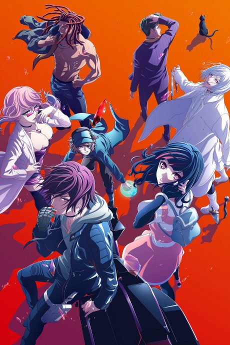
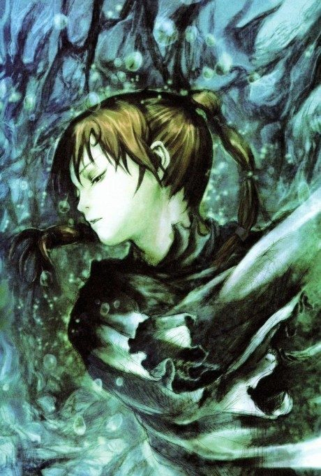
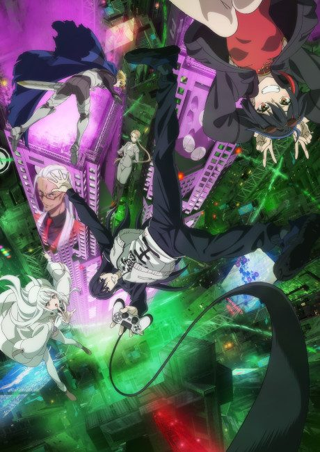
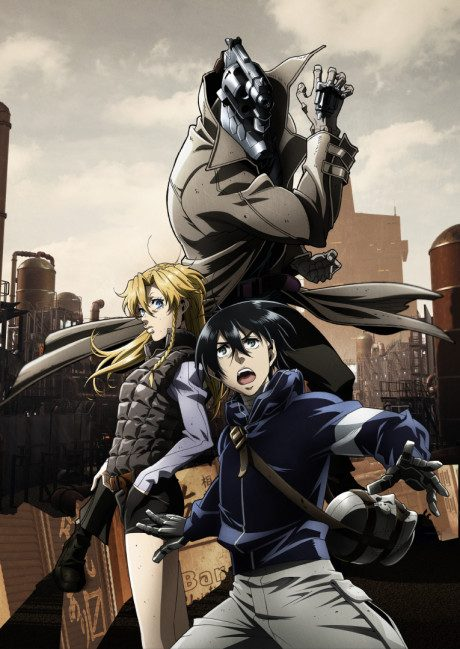

Cyberpunk: Edgerunners
サイバーパンク エッジランナーズ
In a city obsessed with body modification, a street kid named David loses everything and becomes an edgerunner, a mercenary who will do anything to survive.
An original anime, so there's no book to continue with.
8.5AniList score
—Animeter, no votes yet
10episodes
Rate it or report where you stopped
Arcs
Episodes numbered 1-10 in release order (single season).
Story arcFiller arc10 episodes
1
Season 1
David's Fall
Street kid David Martinez's life in Night City falls apart, pushing him toward the edgerunner life.
Ep 1–2
2
Season 1
Maine's Crew
David joins Maine's crew of mercenaries and learns the trade.
Ep 3–6
3
Season 1
David's Crew
After a time skip, David leads the crew deeper into Arasaka's sights.
Ep 7–10
Sources: Wikipedia
More like Cyberpunk: Edgerunners

Original7.3 Done8.4
Done8.4

Original7.4 Original7.6
Original7.6

Original7.7 Original8.5
Original8.5

Unclear7.1 Novel ahead8.3
Novel ahead8.3
 Manga Ch. 318.1
Manga Ch. 318.1
 Original8.1
Original8.1
 Original8.1
Original8.1

Manga Ch. 416.6